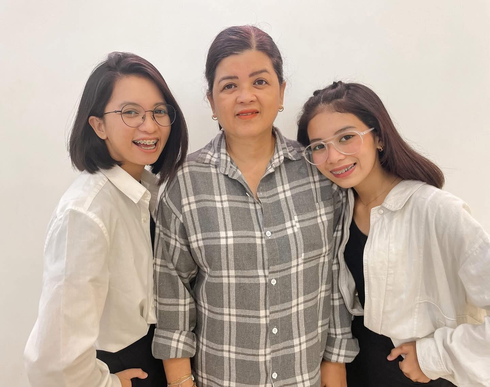
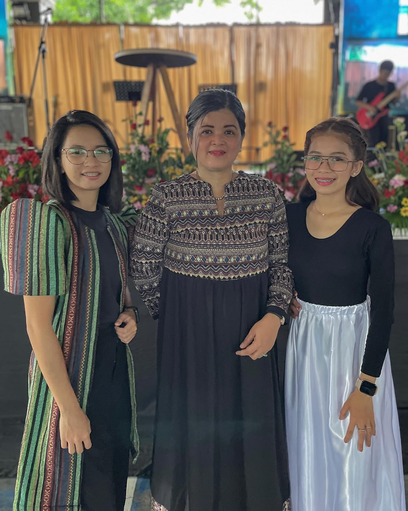
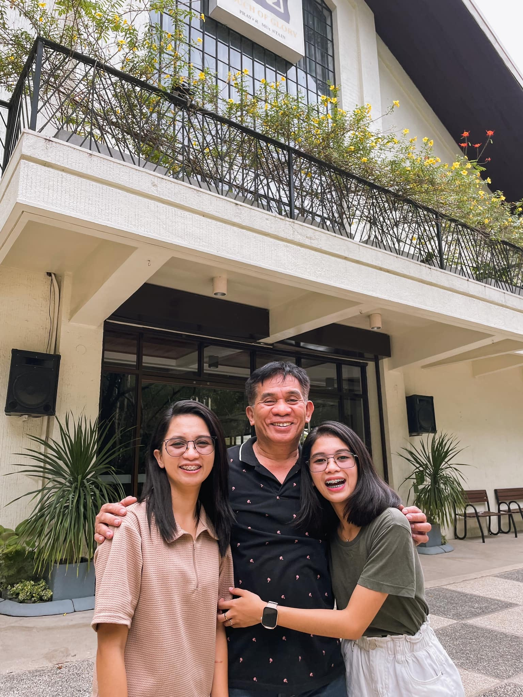
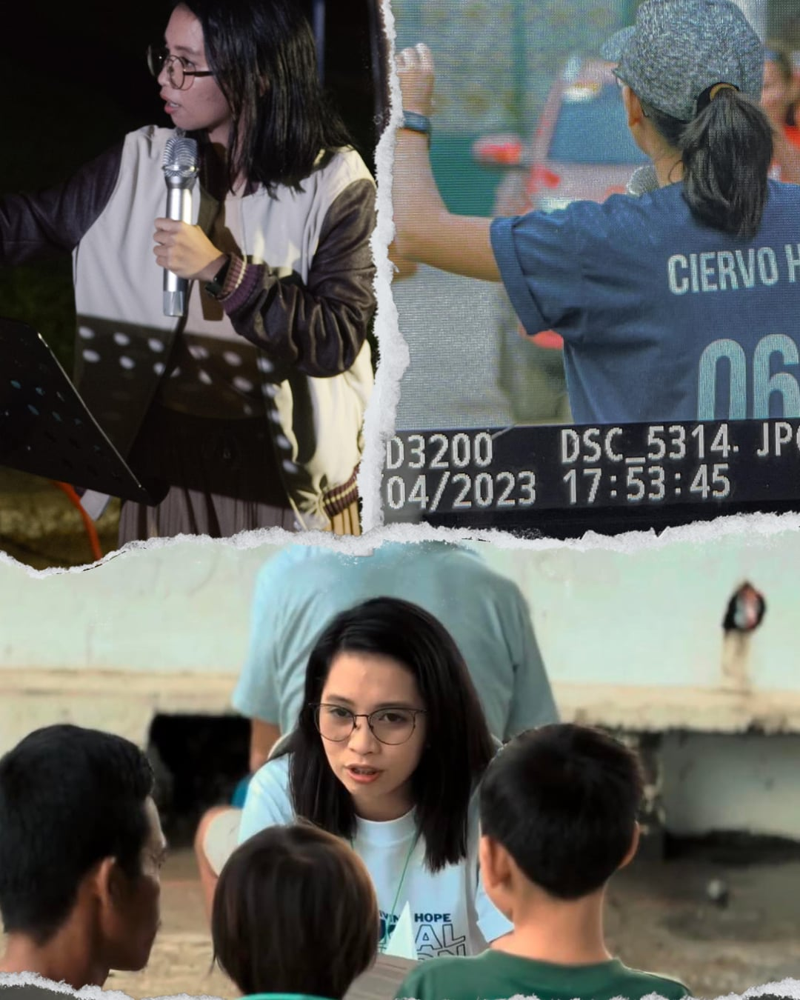
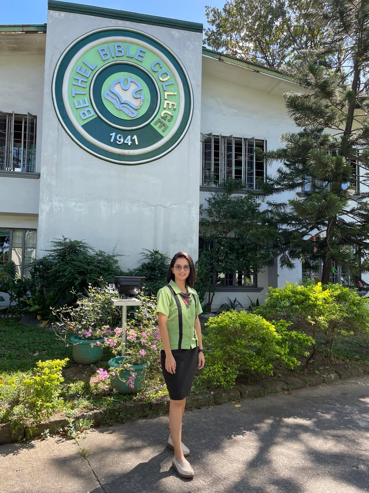
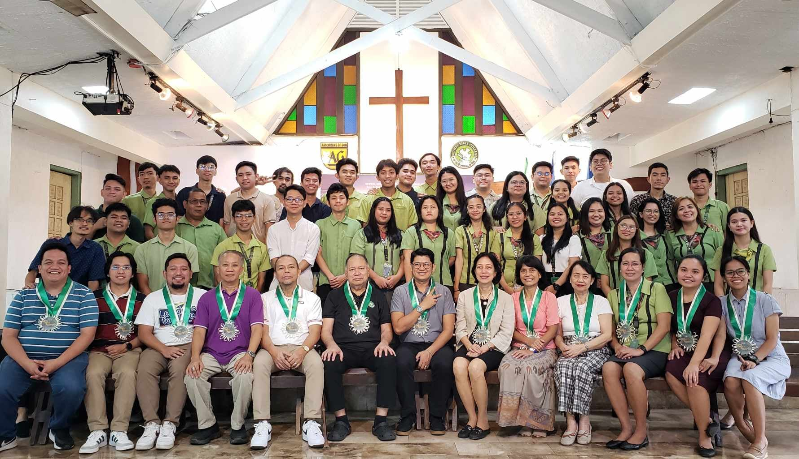
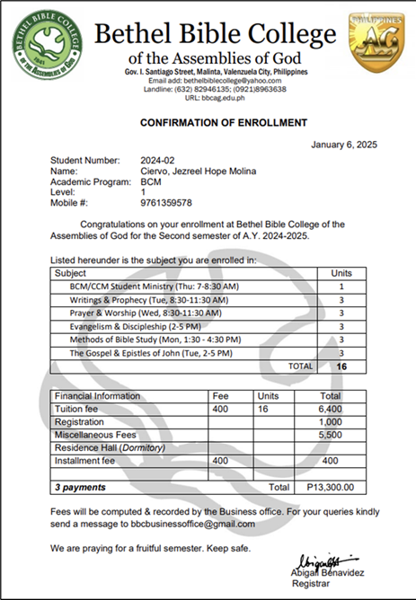

PRAISE GOD FROM WHOM ALL BLESSINGS FLOW!
I am Jezreel Hope Molina Ciervo, 28 years old, single, and currently working at IBM Business Services Inc. as a U.S. Payroll Trainer and Lead Quality Analyst during the night shift (11 PM to 8 AM Manila Time). I am also studying at Bethel Bible College during the day, pursuing a Bachelor of Christian Ministries degree with a major in Pastoral Leadership.
I would like to share some personal information so you can get to know me better. I am the breadwinner of my family and currently living with my mother and sister. My sister is a 3rd-year college student pursuing a Bachelor of Science in Computer Science, while my mother works part-time as a real estate agent.
My family and I are fully committed to serving the Lord in our local church, Jesus Our Living Hope Christian Family Church, located on the 2nd floor of Ramos Building, Deparo Road, Bagumbong, Caloocan City. The church is led by our senior pastor, Rev. Pastora Elmara Billones. I am part of the Pulpit Ministry as one of the preachers, the ministry head of the Young Adults’ Ministry, and the mainstay keyboardist for the Praise and Worship Team.
In 2023, during one of our church events, the Lord undeniably called me to know Him more and serve Him in ministry. I accepted His call, fully aware of the challenges of following and serving Him, especially how it would impact our finances. I knew I would need to allocate a budget for my tuition fees, school allowances, and other expenses required for school activities.
I witnessed my father’s struggles as he led his church as a pastor, but I also saw the incredible faithfulness of the God he served. His example has only deepened my resolve to pursue my own calling, knowing that God is our ultimate provider. Reflecting on God’s greatness, I place my complete trust in Him. I believe wholeheartedly that He is the God of impossibilities, and with Him, all things are possible for those who believe (Mark 9:23).
 
As I prayed in 2023 for God’s confirmation of my calling, I developed a deep desire to gain a greater understanding of Scripture so I could share it with full confidence and theological accuracy. In July 2024, I decided to enroll at Bethel Bible College to deepen my knowledge of God. Through this training at my wonderful school, I believe God is shaping and disciplining me as a minister so that my sermons will align perfectly with what He wants me to share with those who need Jesus in their lives.
The purpose of this message is to share how good the Lord has been in my life, never leaving nor forsaking me in any situation. While I work as a corporate employee with a sufficient salary to support my family’s needs, I praise God for providing me with this job. However, as I pursue my current studies, our family is experiencing financial constraints.
Since this is my second bachelor’s degree, I am currently completing the necessary units. I thank the Lord for enabling me to successfully complete my first semester, and I am now in my second semester (January to May 2025).
 I am now walking by faith, and God has given me the wisdom to come up with this idea to raise the funds needed to continue my studies. The Lord impressed upon me to send this message to you and ask if you would consider partnering with me in the ministry as I pursue my studies in Bible school. I want to be transparent about the expenses I need to raise for this semester, which total ₱13,300. I have requested that this amount be paid in installments to give me more time to save for it.
Integrity is very important to me as a follower of Christ, and I am committed to providing any additional information you may need.
In return for your partnership, I will be sending you a monthly report about my personal, ministry, and academic updates. I will also include you and your family in my prayers, and I will never forget how God is using you to support His ministry in this way. Any amount you can give would be greatly appreciated. Once I reach the target amount for my tuition fee, I am willing to returning any excess funds as part of my integrity and commitment.
Here are the possible ways to send your support:
Account Name: JEZREEL HOPE CIERVO
BDO: 010330194445
UnionBank: 1098-8518-4658
Gcash and Maya (PayMaya): 09561356083
“The Lord bless you and keep you; The Lord make His face shine upon you, And be gracious to you; The Lord lift up His countenance upon you, And give you peace.” ’ Numbers 6:24-26 NKJV
I am truly excited about what God has in store for all of us. As you reach this final part of this message, may the Lord touch your heart and bless you a hundredfold in return for your support. God bless you!
Social Media


Email: jezciervo@yahoo.com
Mobile Number: +63 976-1359578 / +63 956-1356083